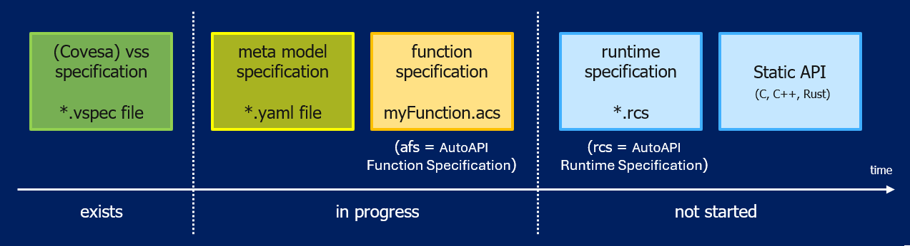

Current status of the project:

Function Specification File#
A Function Specification File is characterized by a set of attributes and parameters. Attributes describe the signal itself (e.g., its properties and characteristics), while parameters provide additional configuration and implementation-specific information. Together, they define all information required for API generation and integration.
A Function Specification File always describes exactly one function: its dataInterfaces, its parameters and the scheduling of
its own runnables. It does not describe how this function is combined with other functions, how their signals are connected to each other,
or in which order several functions execute relative to each other on a system. That system-level composition of multiple Function
Specification Files is described by the Runtime Specification File.
About the naming#
In our documentation, we deliberately use the term Function (for example, Function Specification File and Function Adapter) because other terms, such as Component, Application, or Module, often carry pre-existing meanings in different frameworks and toolchains.
In this context, a Function represents a self-contained piece of functionality, typically implemented as a wrapper or adapter on top of middleware and algorithmic code (for example, MATLAB-generated code). The term is intentionally generic and can be used to describe a wide range of algorithmic purposes, including:
Vehicle Function
Diagnostic Function
Control Function
Analysis Function
Calculation Function
Signal Processing
Data Processing
Estimation Function
Monitoring Function
Simulation Function
Therefore, the term Function should be understood as a generic abstraction for algorithmic functionality rather than as a specific software architectural concept.
Content Of Function Specification File#
Property / Attribute |
Req. |
Description |
Example / Notes |
dataInterfaces |
Yes |
Collection of required signals |
|
parameters |
Yes |
Collection of parameters for calibration & configuration |
|
errorInterfaces |
Optional |
Collection of function-specific diagnostic interfaces, separate from the generic executionResult reported per runnable in scheduling [2] |
|
scheduling |
Yes |
Scheduling information for runnable/function entry point [1] |
|
supervision |
Yes [2] |
Per-runnable execution supervision configured within scheduling: alive, deadline and/or logical checks. |
|
Template Version 0.0.1
1# *******************************************************************************
2# Copyright (c) 2026 ZF Friedrichshafen AG
3#
4# See the NOTICE file(s) distributed with this work for additional
5# information regarding copyright ownership.
6#
7# This program and the accompanying materials are made available under the
8# terms of the Apache License Version 2.0 which is available at
9# https://www.apache.org/licenses/LICENSE-2.0
10#
11# SPDX-License-Identifier: Apache-2.0
12#
13# Contributors:
14# Thomas Pfleiderer - Function specification added
15# *******************************************************************************
16#
17# TEMPLATE - Function specification File (*.acs)
18#
19# Copy this file, rename it to <YourFunctionName>.acs and fill it in.
20# Every "row" below is one signal/parameter/runnable and MUST provide exactly
21# one value per entry listed under "columns", in the same order.
22# Remove this header and all "# <-- ..." hints once the file is filled in.
23
24functionSpecification:
25 name: <YourFunctionName> # e.g. SpeedHazardDetection
26 version: 1.0.0 # semantic version of this function specification
27 metaModelRef:
28 name: Eclipse-autoapiframework-Metamodel
29 version: 0.4.0 # meta model version this file was written against
30
31 description: >-
32 <One or two sentences describing what this function does.>
33
34 # -----------------------------------------------------------------------
35 # 1) DATA INTERFACES: one object per input/output signal.
36 # - direction: input | output
37 # - FuSa: true | false
38 # - ASIL: QM | A | B | C | D
39 # - protection: none | complement | other
40 # - qualityCode is runtime companion information and therefore is not a
41 # static metadata value in this specification.
42 # -----------------------------------------------------------------------
43 dataInterfaces:
44 - name: Vehicle.<Domain>.<Signal>
45 direction: input
46 dataType: float
47 description: <Functional meaning of the signal.>
48 unit: <unit>
49 min: <min>
50 max: <max>
51 defaultValue: <defaultValue>
52 resolution: <resolution>
53 precision: <precision>
54 FuSa: true
55 ASIL: QM
56 minUpdatePeriodMs: <minUpdatePeriodMs>
57 accuracy: <expected accuracy>
58 protection: none
59
60 # - name: Vehicle.<Domain>.<OutputSignal>
61 # direction: output
62 # dataType: float
63 # description: <Functional meaning of the output signal.>
64 # unit: <unit>
65 # min: <min>
66 # max: <max>
67 # defaultValue: <defaultValue>
68 # resolution: <resolution>
69 # precision: <precision>
70 # FuSa: false
71 # ASIL: QM
72 # minUpdatePeriodMs: <minUpdatePeriodMs>
73 # accuracy: <expected accuracy>
74 # protection: none
75
76 # -----------------------------------------------------------------------
77 # 2) PARAMETERS: one object per calibration/configuration value.
78 # - dimensions is optional and only needed for array/map parameters,
79 # e.g. [10] for a vector or [7, 10] for a 7x10 map.
80 # -----------------------------------------------------------------------
81 parameters:
82 - name: Vehicle.<Domain>.<Parameter>
83 dataType: float
84 defaultValue: <defaultValue>
85 description: <Meaning and intended usage of the parameter.>
86 unit: <unit>
87 tunable: false
88 min: <min>
89 max: <max>
90 # dimensions: [<size>]
91
92 # -----------------------------------------------------------------------
93 # 3) ERROR INTERFACES: optional, one object per function-specific
94 # diagnostic interface. Separate from the generic executionResult
95 # reported per runnable in "scheduling" below.
96 # - severity: information | warning | degraded | shutdown
97 # - Naming convention: <FunctionName>.<ErrorName>.ErrorStatus
98 # -----------------------------------------------------------------------
99 # errorInterfaces:
100 # - name: <YourFunctionName>.<ErrorName>.ErrorStatus
101 # dataType: boolean
102 # description: <Meaning of the error and its trigger scenario.>
103 # severity: degraded
104 # maturationTimeMs: <maturationTimeMs>
105 # resetTimeMs: <resetTimeMs>
106 # resetCondition: <Condition that clears the error.>
107 # dependencyRefs: []
108 # fallbackBehavior: <Function-level fallback/degradation behavior.>
109 # raisesSafetyReactionRefs: []
110
111 # -----------------------------------------------------------------------
112 # 4) SCHEDULING: one object per runnable/function entry point.
113 # - runType: init | cyclic | event | terminate
114 # - Naming convention: <FunctionName>.Init / .Step / .Terminate
115 # - previousRunnableRef: name of the runnable that must run right before
116 # this one (use System.Startup for the very first runnable).
117 # - executionResult: success | failure | notAvailable
118 # - supervision.required: false, or true with one or more of the
119 # supervision.type values below (alive | deadline | logical), each
120 # configured via its matching alive/deadline/logical object.
121 # - schedulingPolicy and stackSizeBytes are optional.
122 # -----------------------------------------------------------------------
123 scheduling:
124 - functionName: <YourFunctionName>.Init
125 runType: init
126 description: <Initialize internal states.>
127 cycleTimeMs: 0
128 implementedASIL: QM
129 previousRunnableRef: System.Startup
130 executionResult: success
131 supervision:
132 required: false
133
134 - functionName: <YourFunctionName>.Step
135 runType: cyclic
136 description: <Evaluate inputs and calculate outputs.>
137 cycleTimeMs: <cycleTimeMs>
138 implementedASIL: QM
139 previousRunnableRef: <YourFunctionName>.Init
140 executionResult: success
141 supervision:
142 required: false
143 # supervision:
144 # required: true
145 # type:
146 # - alive
147 # - deadline
148 # - logical
149 # alive:
150 # minIndications: <minIndications>
151 # maxIndications: <maxIndications>
152 # referenceCycleMs: <referenceCycleMs>
153 # deadline:
154 # minExecutionTimeMs: <minExecutionTimeMs>
155 # maxExecutionTimeMs: <maxExecutionTimeMs>
156 # logical:
157 # predecessorRefs: []
158 # successorRefs: []
159 # schedulingPolicy: <e.g. preemptive/non-preemptive>
160 # stackSizeBytes: <stackSizeBytes>
161
162 - functionName: <YourFunctionName>.Terminate
163 runType: terminate
164 description: <Shutdown cleanup.>
165 cycleTimeMs: 0
166 implementedASIL: QM
167 previousRunnableRef: <YourFunctionName>.Step
168 executionResult: success
169 supervision:
170 required: false
What needs to be added for the SpeedHazardDetection example:
1# *******************************************************************************
2# Copyright (c) 2026 ZF Friedrichshafen AG
3#
4# See the NOTICE file(s) distributed with this work for additional
5# information regarding copyright ownership.
6#
7# This program and the accompanying materials are made available under the
8# terms of the Apache License Version 2.0 which is available at
9# https://www.apache.org/licenses/LICENSE-2.0
10#
11# SPDX-License-Identifier: Apache-2.0
12#
13# Contributors:
14# Thomas Pfleiderer - Function specification added
15# *******************************************************************************
16
17functionSpecification:
18 name: SpeedHazardDetection
19 version: 1.0.0
20 metaModelRef:
21 name: Eclipse-autoapiframework-Metamodel
22 version: 0.4.0
23
24 description: >-
25 Detects rapid acceleration and requests hazard warning lights if the
26 configured threshold is exceeded.
27
28 dataInterfaces:
29 - name: Vehicle.Speed
30 direction: input
31 dataType: float
32 description: Current vehicle speed value.
33 unit: km/h
34 min: 0.0
35 max: 300.0
36 defaultValue: 0.0
37 resolution: 0.1
38 precision: 1
39 FuSa: true
40 ASIL: B
41 minUpdatePeriodMs: 10
42 accuracy: "+/-0.2 km/h"
43 protection: complement
44
45 - name: Vehicle.Acceleration.Longitudinal
46 direction: input
47 dataType: float
48 description: Longitudinal acceleration used to detect strong acceleration events.
49 unit: m/s2
50 min: -20.0
51 max: 20.0
52 defaultValue: 0.0
53 resolution: 0.01
54 precision: 2
55 FuSa: true
56 ASIL: B
57 minUpdatePeriodMs: 10
58 accuracy: "+/-0.05 m/s2"
59 protection: complement
60
61 - name: Vehicle.Body.Lights.Hazard.Request
62 direction: output
63 dataType: boolean
64 description: True requests activation of hazard warning lights.
65 unit: boolean
66 min: 0
67 max: 1
68 defaultValue: false
69 resolution: 1
70 precision: 1
71 FuSa: true
72 ASIL: B
73 minUpdatePeriodMs: 20
74 accuracy: logical
75 protection: complement
76
77 - name: Vehicle.Speed.Qualifier
78 direction: input
79 dataType: uint8
80 description: Runtime quality qualifier for Vehicle.Speed value.
81 unit: code
82 min: 0
83 max: 5
84 defaultValue: 0
85 resolution: 1
86 precision: 1
87 FuSa: false
88 ASIL: QM
89 minUpdatePeriodMs: 10
90 accuracy: enum-based
91 protection: none
92
93 parameters:
94 - name: Vehicle.Chassis.SpeedHazardForward
95 dataType: float
96 defaultValue: 10.0
97 description: >-
98 Relative speed increase threshold in percent for triggering
99 hazard request while driving forward.
100 unit: percent
101 tunable: false
102 min: 0.0
103 max: 100.0
104
105 - name: Vehicle.Chassis.HazardRequestDurationMs
106 dataType: uint32
107 defaultValue: 3000
108 description: Hold time for hazard request after trigger.
109 unit: ms
110 tunable: false
111 min: 0
112 max: 600000
113
114 scheduling:
115 - functionName: SpeedHazardDetection.Init
116 runType: init
117 description: Initialize internal states and latched outputs.
118 cycleTimeMs: 0
119 implementedASIL: B
120 previousRunnableRef: System.Startup
121 supervision:
122 required: false
123
124 - functionName: SpeedHazardDetection.Step
125 runType: cyclic
126 description: Evaluate inputs and calculate hazard request output.
127 cycleTimeMs: 20
128 implementedASIL: B
129 previousRunnableRef: SpeedHazardDetection.Init
130 supervision:
131 required: false
132
133 - functionName: SpeedHazardDetection.Terminate
134 runType: terminate
135 description: Shutdown cleanup for deterministic deactivation.
136 cycleTimeMs: 0
137 implementedASIL: QM
138 previousRunnableRef: SpeedHazardDetection.Step
139 supervision:
140 required: false